先取出 SIM 卡，再还原 iPhone
拿出准备用于 TikTok 的备用 iPhone。如果卡槽里有实体 SIM 卡，先把卡取出来。从还原出厂到以后使用 TikTok，都让卡槽保持空置，只连 Wi-Fi。需要收短信验证码时，把卡放在另一台手机上。
如果这台 iPhone 已启用 eSIM，先在「设置 → 蜂窝网络」中逐个点进已启用的号码，关闭「启用此号码」。稍后设置新机时跳过号码转移或激活。

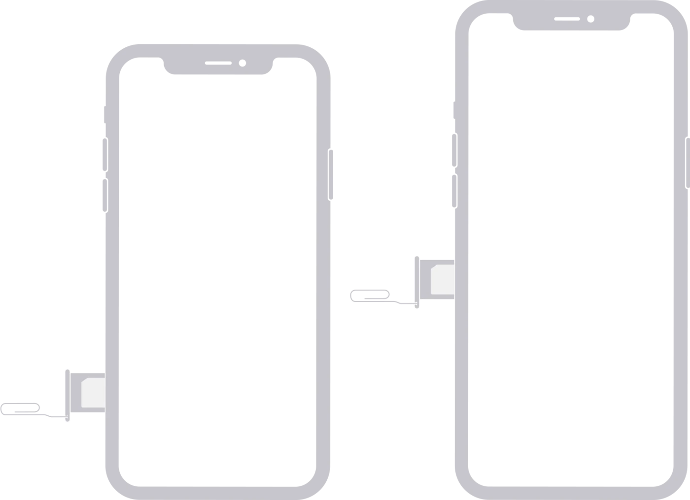
把要保留的照片和本地草稿另存好。需要备份整机时，打开「设置 → 你的姓名 → iCloud → iCloud 云备份 → 立即备份」，看到本次备份成功的时间后再继续。
在手机上依次点「设置 → 通用 → 传输或还原 iPhone → 抹掉所有内容和设置」。点「继续」，按提示输入设备密码和 Apple 账户密码。使用 eSIM 且打算保留号码时，选择「保留 eSIM 并抹掉数据」。

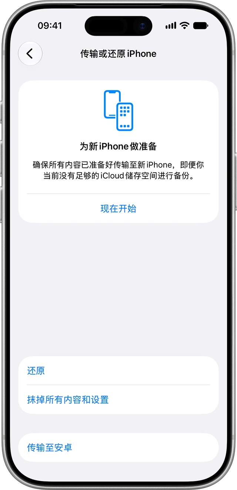

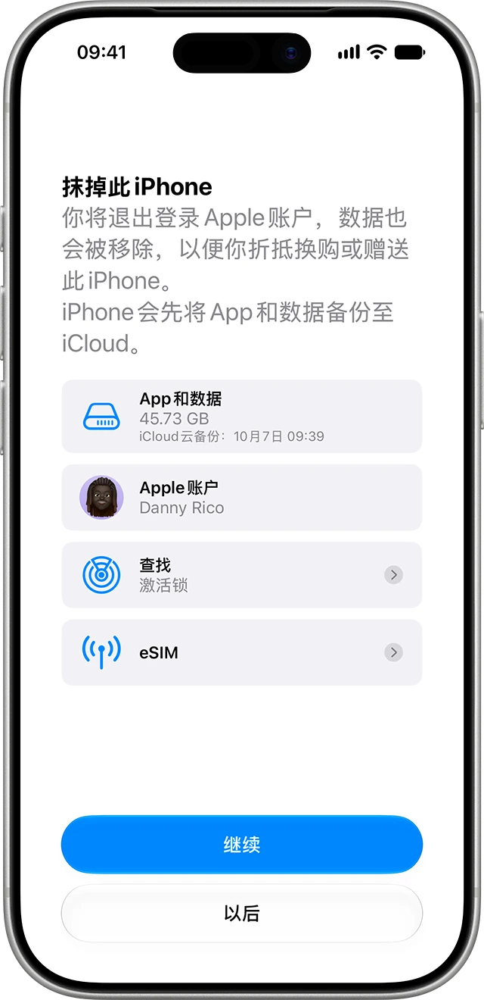

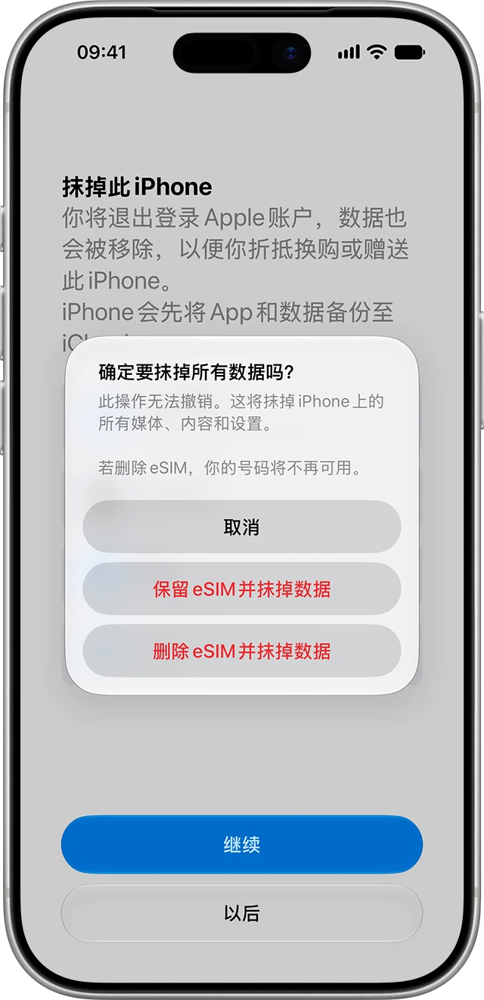
等到出现「你好」，连上 Wi-Fi。地区可以在这里选「美国」。在「传输 App 与数据」页面选「不传输 App 与数据」，按新机完成设置。查看 Apple 官方操作图
连接 Wi-Fi，设置美国地区和时区
还原完成后，确认 iPhone 能通过 Wi-Fi 上网。如果保留了 eSIM，请到「设置 → 蜂窝网络」确认各号码仍处于关闭状态。
打开「设置 → 通用 → 语言与地区 → 地区」，选「美国」。系统语言可按阅读习惯保留中文，也可以设成 English。

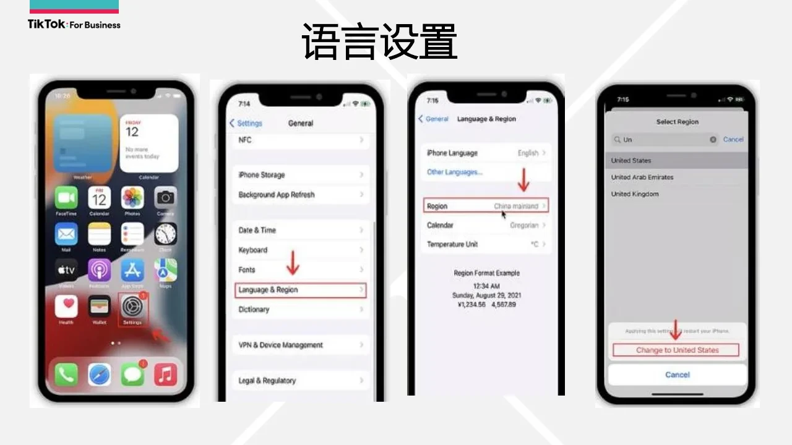
如果准备连接美国洛杉矶的 VPN，在「设置 → 通用 → 日期与时间」关闭「自动设置」或「自动设定时区」，点「时区」或「时区城市」，搜索 Los Angeles（洛杉矶）。按城市选时区，夏令时切换也能对应；日期和分钟保持准确。

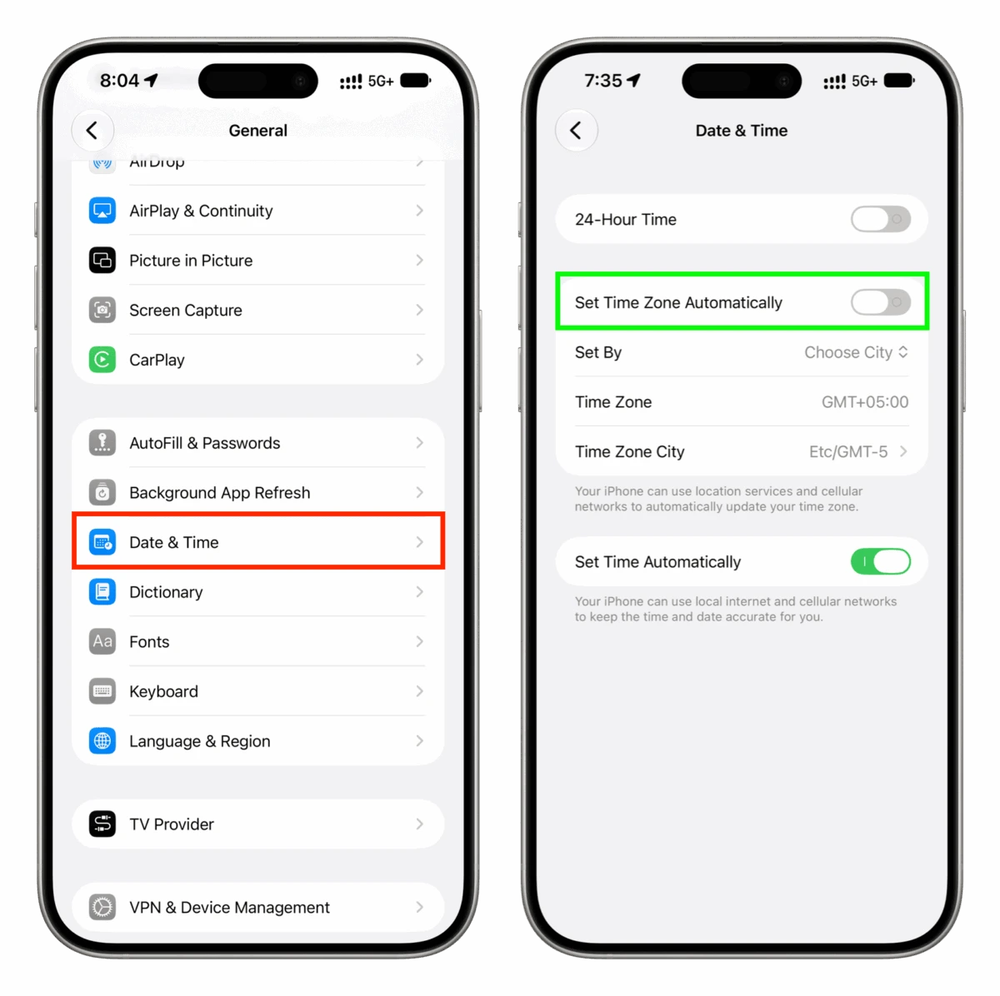
购买带 Shadowrocket 的美区 Apple ID
打开本站「美区 Apple ID」分类，进入 KX Store。按本教程购买，一定要选「已购 Shadowrocket 美区账号（独享）」。可直接打开第三方商家的商品页：store.kxsw.org/buy/2。下单时填自己能收信的邮箱，保存订单和交付资料。

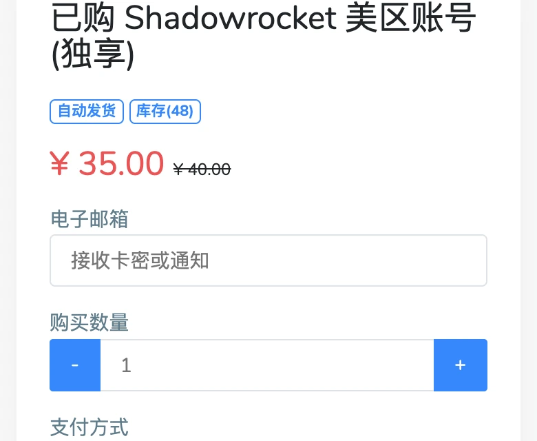
收到资料后按购买页的「如何使用」确认账号可用，然后照「修改资料」教程，绑定并验证自己的邮箱和手机号。订单上的收货邮箱不会自动成为 Apple 账户邮箱。若页面要求救援邮箱，也填自己长期使用的地址。
在 Apple 的「登录与安全」里按提示开启双重认证，添加受信任电话号码，输入短信验证码。确认邮箱和号码都能使用后，更换独立密码并检查受信任设备。打开 Apple 账户管理
用美区 ID 登录 App Store，下载两个 App
打开 App Store → 右上角头像。如果商店已登录其他账户，滑到底部点「退出登录」，再用刚绑定好的美区 Apple ID 和密码登录，按提示完成验证。这个账号只登录 App Store，手机的 iCloud 和「查找」使用自己的主账户。


在商店搜索 TikTok，点「获取」。再搜索 Shadowrocket（小火箭），认准开发者 Shadow Launch Technology Limited。已购账户通常显示云朵下载按钮；如果仍显示价格，先核对当前商店账号和已购项目。

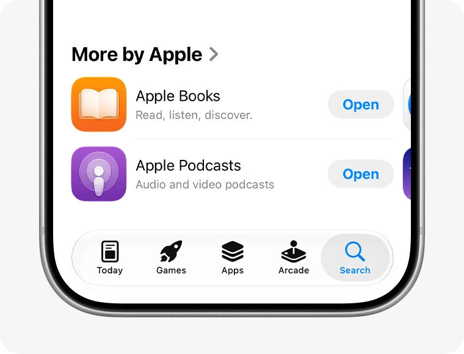

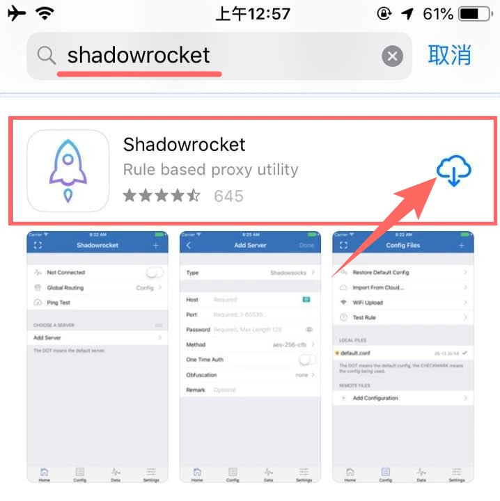
安装后打开「设置 → 隐私与安全性 → 定位服务 → TikTok」，选「永不」。若列表暂时没有 TikTok，在它首次请求定位时点「不允许」。这样可以单独管理 TikTok 的定位权限。

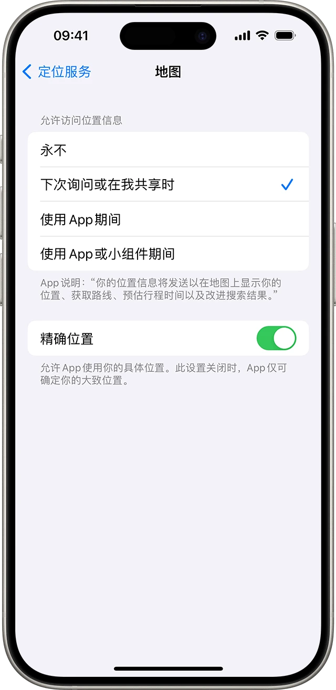
用 Shadowrocket 扫码导入洛杉矶线路
Shadowrocket 是连接工具，还需要一条可以导入的线路。已有线路的读者可以直接看下面的扫码步骤。
购买或自行搭建线路后，服务商或搭建工具一般会提供一张节点二维码。在另一部手机或电脑上把码打开，方便 iPhone 扫描。节点码含连接凭据，请自己保存。
打开 Shadowrocket，点首页左上角的扫码图标，按提示允许使用相机，对准节点码。回到首页后，点选刚导入的美国洛杉矶节点。若收到的是订阅二维码，先展开导入的节点列表，再选洛杉矶。

打开首页连接开关。第一次出现「添加 VPN 配置」时点「允许」，按提示验证设备密码。若希望这部专用机统一通过所选节点连接，可在「全局路由」选择「代理」。查看客户端配置说明

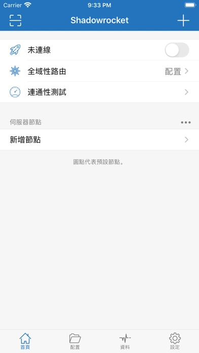
检查出口，再打开 TikTok
先用 Safari 打开 IPinfo 查看当前公网 IP 的国家是否为 United States。城市定位可能有偏差。若国家不对，先回小火箭检查选中的线路和连接开关。使用分流规则时，检测网页只反映该网页实际走的出口。

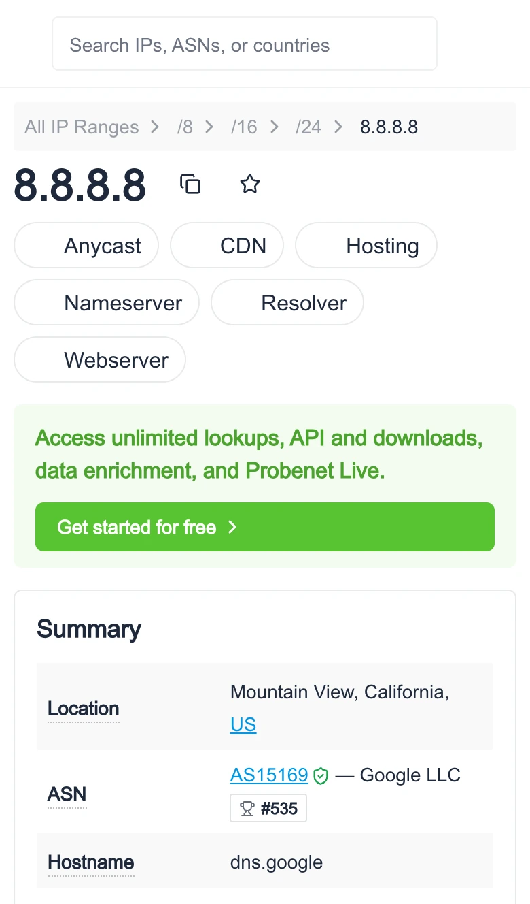
打开 TikTok，登录自己的 TikTok 账号，试播几条视频。需要新账号可以接着看「如何注册 TikTok」。美区 Apple ID 用于下载应用；系统地区、时区和 VPN 出口也不会自动把已有 TikTok 账号改为美区。
想看洛杉矶的内容，可以搜索当地的街区、餐馆或创作者。你看完、跳过和关注哪些内容，都会影响之后的推荐。TikTok 推荐机制说明